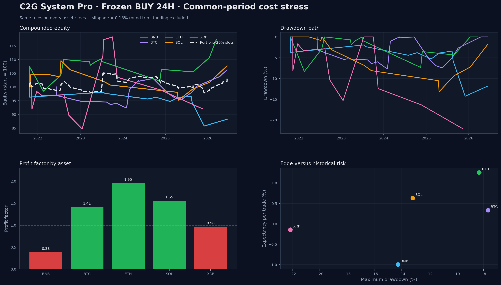
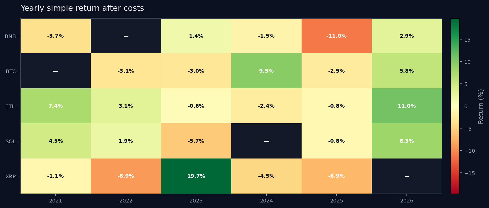
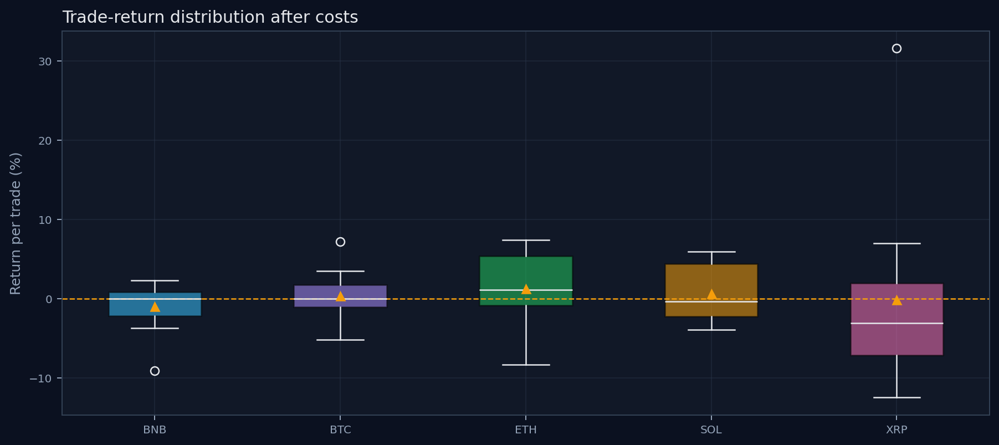
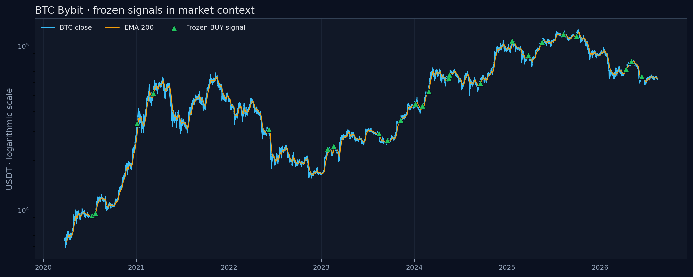

C2G System Pro · V1.18 research report
Frozen BUY 24H backtest
Generated 2026-08-17T19:48:10.208613+00:00. The same frozen parameters were applied without asset-specific retuning.
Positive assets after costs3/5
Strongest historical PFETH · 1.953
Equal-slot portfolio return3.39%
Maximum nominal exposure60%

Common-period cross-asset result
| Asset | Trades | Win rate | PF | Expectancy | Return | Max DD | Result |
|---|---|---|---|---|---|---|---|
| BNB | 12 | 50.00% | 0.382 | -0.9944% | -11.93% | -14.28% | FAILED |
| BTC | 20 | 50.00% | 1.412 | 0.3366% | 6.73% | -7.68% | HISTORICALLY_POSITIVE |
| ETH | 14 | 57.14% | 1.953 | 1.2563% | 17.59% | -8.32% | HISTORICALLY_POSITIVE |
| SOL | 13 | 46.15% | 1.553 | 0.6291% | 8.18% | -13.19% | HISTORICALLY_POSITIVE |
| XRP | 12 | 41.67% | 0.963 | -0.1435% | -1.72% | -22.15% | FAILED |
Uncertainty and top-winner dependency
Bootstrap probabilities use 20,000 resamples. Wide intervals are expected because each asset has only 12–20 trades.
| Asset | P(Exp > 0) | Expectancy 95% CI | P(PF > 1) | PF after top winner removed |
|---|---|---|---|---|
| BNB | 12.27% | -2.854% to 0.523% | 12.27% | 0.264 |
| BTC | 70.50% | -0.774% to 1.523% | 70.50% | 0.972 |
| ETH | 84.76% | -1.199% to 3.536% | 84.76% | 1.552 |
| SOL | 74.19% | -1.157% to 2.519% | 74.19% | 1.149 |
| XRP | 44.69% | -5.441% to 6.891% | 44.69% | 0.290 |


Signal context

Data-quality audit
28 non-hourly gaps were detected across the source files. They remain visible in the audit instead of being silently filled.
| Asset | Market | Rows | Gaps | Last candle UTC |
|---|---|---|---|---|
| BTC | BINANCE_SPOT | 78,727 | 28 | 2026-08-15T18:00:00+00:00 |
| BTC | BYBIT_PERPETUAL | 56,025 | 0 | 2026-08-15T18:00:00+00:00 |
| BTC | OKX_PERPETUAL | 58,051 | 0 | 2026-08-15T18:00:00+00:00 |
| ETH | BYBIT_PERPETUAL | 47,516 | 0 | 2026-08-15T19:00:00+00:00 |
| SOL | BYBIT_PERPETUAL | 42,380 | 0 | 2026-08-15T19:00:00+00:00 |
| XRP | BYBIT_PERPETUAL | 46,091 | 0 | 2026-08-15T19:00:00+00:00 |
| BNB | BYBIT_PERPETUAL | 44,965 | 0 | 2026-08-15T19:00:00+00:00 |
Methodology
BUY only: Supertrend 10/3 flip, ADX(14) > 25 and rising, close above a rising EMA 200. Entry occurs at the next candle open. Exit occurs at the close of the 24th held one-hour candle.
The portfolio diagnostic uses five fixed 20% capital slots with no leverage. It is a realized trade-level proxy, not a mark-to-market risk engine.
Research limitation. Funding, order-book depth, latency, partial fills and exchange outages are not modeled. Historical and forward samples are small, and correlated crypto assets are not independent evidence. This report is not financial advice.